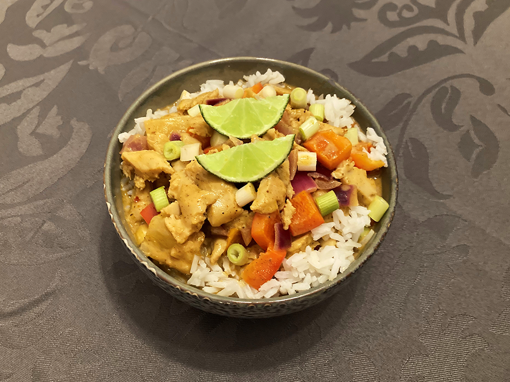

coq au vin

griekse vega gyros wraps

kip in de hoed

biefstuk met chimichurri & gegrilde groenten

bami met spinazie

japanse beef teriyaki

salade met gegrilde ananas

ananas beignets

crêpe met fruit

thaise zoetzure curry
Dit heerlijke gerecht heb ik leren maken tijdens een kookcursus in Chiang Mai. Tip: vervang de ananas met mango, vervang de rode curry pasta door groene of vervang de kip door garnalen!

Bereidingsduur: 20 minuten
Aantal personen: 4
Ingrediënten:
350 gram (vegetarische) kipstukjes
1 paprika
1 ui
100 gram rode curry pasta
120 gram ananas
4 eetlepels tamarindepasta
2 eetlepels palmsuiker
400 mililiter kokosmelk
200 mililiter kokoscrème
300 gram jasmijnrijst of pandanrijst
1 teentje knoflook
wokolie
350 gram (vegetarische) kipstukjes
1 paprika
1 ui
100 gram rode curry pasta
120 gram ananas
4 eetlepels tamarindepasta
2 eetlepels palmsuiker
400 mililiter kokosmelk
200 mililiter kokoscrème
300 gram jasmijnrijst of pandanrijst
1 teentje knoflook
wokolie
Instructies:
1. Snij het vlees, de ui, paprika en knoflook in kleine stukjes. Maak de rijst klaar zoals op de verpakking is aangegeven.
2. Doe wat olie in een pan en bak hierin opeenvolgend de knoflook, ui en curry pasta op minimum temperatuur mee tot dat er een goede geur vanaf komt. Voeg de kokosmelk toe en roer een beetje. Wacht tot er veel bubbels vanaf komen en roer nog eens.
3. Voeg het vlees, de vissaus, palmsuiker toe en roer goed door.
4. Voeg de kokoscrème, tamarindepasta, paprika en ananas toe en laat het 5 minuutjes koken. Roer ondertussen.
5. Serveren met de rijst. Garneer de curry eventueel met een limoenschijfje of gebakken uitjes.
1. Snij het vlees, de ui, paprika en knoflook in kleine stukjes. Maak de rijst klaar zoals op de verpakking is aangegeven.
2. Doe wat olie in een pan en bak hierin opeenvolgend de knoflook, ui en curry pasta op minimum temperatuur mee tot dat er een goede geur vanaf komt. Voeg de kokosmelk toe en roer een beetje. Wacht tot er veel bubbels vanaf komen en roer nog eens.
3. Voeg het vlees, de vissaus, palmsuiker toe en roer goed door.
4. Voeg de kokoscrème, tamarindepasta, paprika en ananas toe en laat het 5 minuutjes koken. Roer ondertussen.
5. Serveren met de rijst. Garneer de curry eventueel met een limoenschijfje of gebakken uitjes.